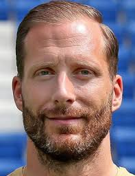
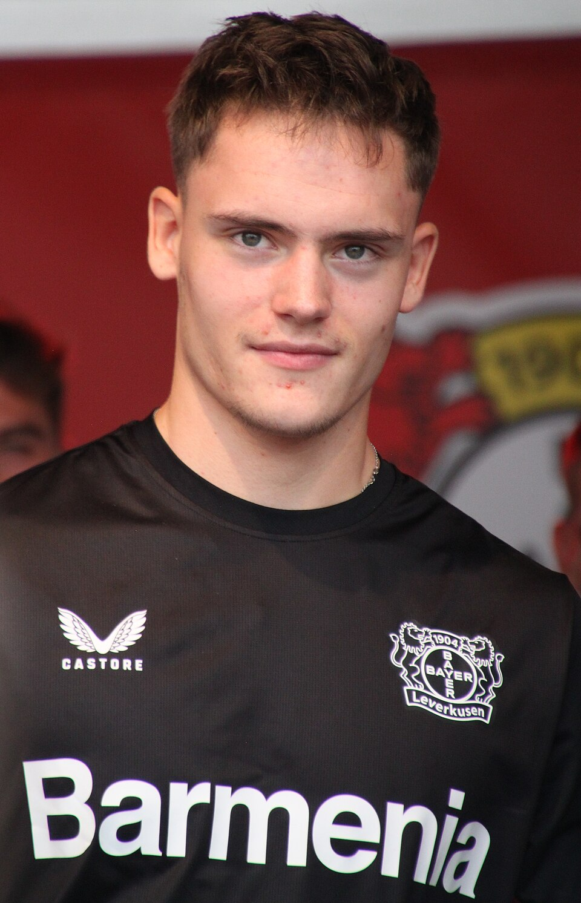
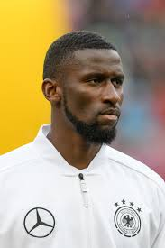
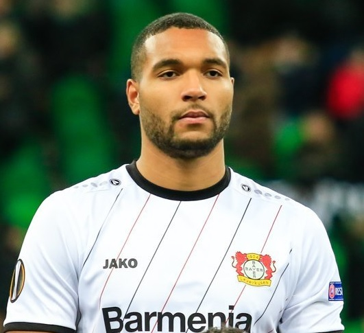
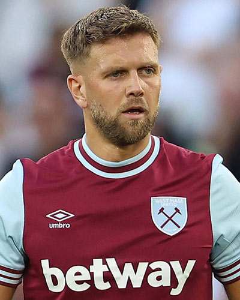
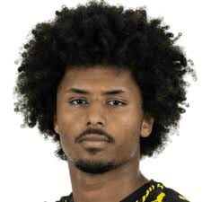
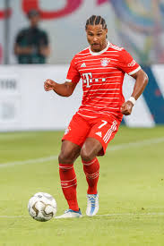

| Oliver Baumann |
Portero |
35 |
Oliver Baumann (n. 1990). Portero con experiencia en la Bundesliga; convocado regularmente en 2025 como opción para la portería. |
 |
| Alexander Nübel |
Portero |
28 |
Alexander Nübel (n. 1996). Portero con recorrido en clubes de la Bundesliga; incluido en convocatorias de 2025. |
 |
| Joshua Kimmich |
Mediocampista / Lateral |
30 |
Joshua Kimmich (n. 1995). Mediocentro polivalente, figura del Bayern Múnich y del mediocampo alemán. |
|
| Leon Goretzka |
Mediocampista |
29 |
Leon Goretzka (n. 1995). Media punta/box-to-box del Bayern Múnich, importante por su físico y llegada al área. |
 |
| Florian Wirtz |
Mediocampista ofensivo |
20 |
Florian Wirtz (n. 2003). Joven talento del fútbol alemán (Bayer Leverkusen), creativo en el último tercio. |
 |
| Antonio Rüdiger |
Defensa central |
32 |
Antonio Rüdiger (n. 1993). Defensa central con experiencia en clubes top europeos; convocado con frecuencia por Alemania. |
 |
| Jonathan Tah |
Defensa central |
29 |
Jonathan Tah (n. 1996). Defensa del Bayer Leverkusen / equipo alemán, habitual en listas internacionales. |
 |
| Niclas Füllkrug |
Delantero |
30 |
Niclas Füllkrug (n. 1993). Delantero con buena capacidad de remate y juego aéreo; participó en convocatorias recientes. |
 |
| Karim Adeyemi |
Delantero / Extremo |
22 |
Karim Adeyemi (n. 2002). Delantero veloz, con experiencia en la Bundesliga y convocado por Alemania en 2025. |
 |
| Serge Gnabry |
Extremo |
29 |
Serge Gnabry (n. 1995). Extremo con gol y asistencias, pieza ofensiva del combinado alemán. |
 |